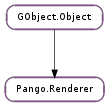

| Subclasses: | CoglPango.Renderer, PangoXft.Renderer |
|---|
| activate() | |
| deactivate() | |
| draw_error_underline(x, y, width, height) | |
| draw_glyph(font, glyph, x, y) | |
| draw_glyph_item(text, glyph_item, x, y) | |
| draw_glyphs(font, glyphs, x, y) | |
| draw_layout(layout, x, y) | |
| draw_layout_line(line, x, y) | |
| draw_rectangle(part, x, y, width, height) | |
| draw_trapezoid(part, y1_, x11, x21, y2, x12, x22) | |
| get_color(part) | |
| get_layout() | |
| get_layout_line() | |
| get_matrix() | |
| part_changed(part) | |
| set_color(part, color) | |
| set_matrix(matrix) |
None
None
| Name | Type | Access |
|---|---|---|
| active_count | int | r |
| matrix | Pango.Matrix | r |
| parent_instance | GObject.Object | r |
| strikethrough | bool | r |
| underline | Pango.Underline | r |
Bases: GObject.Object
Pango.Renderer is a base class for objects that are used to render Pango objects such as Pango.GlyphString and Pango.Layout.
Does initial setup before rendering operations on renderer. Pango.Renderer.deactivate () should be called when done drawing. Calls such as Pango.Renderer.draw_layout () automatically activate the layout before drawing on it. Calls to Pango.Renderer.activate () and Pango.Renderer.deactivate () can be nested and the renderer will only be initialized and deinitialized once.
Cleans up after rendering operations on renderer. See docs for Pango.Renderer.activate ().
| Parameters: |
|
|---|
Draw a squiggly line that approximately covers the given rectangle in the style of an underline used to indicate a spelling error. (The width of the underline is rounded to an integer number of up/down segments and the resulting rectangle is centered in the original rectangle)
This should be called while renderer is already active. Use Pango.Renderer.activate () to activate a renderer.
| Parameters: |
|
|---|
Draws a single glyph with coordinates in device space.
| Parameters: |
|
|---|
Draws the glyphs in glyph_item with the specified Pango.Renderer, embedding the text associated with the glyphs in the output if the output format supports it (PDF for example).
Note that text is the start of the text for layout, which is then indexed by @glyph_item->item->offset.
If text is None, this simply calls Pango.Renderer.draw_glyphs ().
The default implementation of this method simply falls back to Pango.Renderer.draw_glyphs ().
| Parameters: |
|
|---|
Draws the glyphs in glyphs with the specified Pango.Renderer.
| Parameters: |
|
|---|
Draws layout with the specified Pango.Renderer.
| Parameters: |
|
|---|
Draws line with the specified Pango.Renderer.
| Parameters: |
|
|---|
Draws an axis-aligned rectangle in user space coordinates with the specified Pango.Renderer.
This should be called while renderer is already active. Use Pango.Renderer.activate () to activate a renderer.
| Parameters: |
|
|---|
Draws a trapezoid with the parallel sides aligned with the X axis using the given Pango.Renderer ; coordinates are in device space.
| Parameters: | part (Pango.RenderPart) – the part to get the color for |
|---|---|
| Returns: | the color for the specified part, or None if it hasn’t been set and should be inherited from the environment. |
| Return type: | Pango.Color |
Gets the current rendering color for the specified part.
| Returns: | the layout, or None if no layout is being rendered using renderer at this time. |
|---|---|
| Return type: | Pango.Layout |
Gets the layout currently being rendered using renderer. Calling this function only makes sense from inside a subclass’s methods, like in its draw_shape () for example.
The returned layout should not be modified while still being rendered.
| Returns: | the layout line, or None if no layout line is being rendered using renderer at this time. |
|---|---|
| Return type: | Pango.LayoutLine |
Gets the layout line currently being rendered using renderer. Calling this function only makes sense from inside a subclass’s methods, like in its draw_shape () for example.
The returned layout line should not be modified while still being rendered.
| Returns: | the matrix, or None if no matrix has been set (which is the same as the identity matrix). The returned matrix is owned by Pango and must not be modified or freed. |
|---|---|
| Return type: | Pango.Matrix |
Gets the transformation matrix that will be applied when rendering. See Pango.Renderer.set_matrix ().
| Parameters: | part (Pango.RenderPart) – the part for which rendering has changed. |
|---|
Informs Pango that the way that the rendering is done for part has changed in a way that would prevent multiple pieces being joined together into one drawing call. For instance, if a subclass of Pango.Renderer was to add a stipple option for drawing underlines, it needs to call
pango_renderer_part_changed (render, PANGO_RENDER_PART_UNDERLINE);
When the stipple changes or underlines with different stipples might be joined together. Pango automatically calls this for changes to colors. (See Pango.Renderer.set_color ())
| Parameters: |
|
|---|
Sets the color for part of the rendering.
| Parameters: | matrix (Pango.Matrix or None) – a Pango.Matrix, or None to unset any existing matrix. (No matrix set is the same as setting the identity matrix.) |
|---|
Sets the transformation matrix that will be applied when rendering.